О бренде
технологического
прогресса
История Kentatsu Denki — часть японской инженерной культуры
Дорогу осилить проще, если первую часть пути двигаться, ступая по следам первопроходцев. Компания Kentatsu создана в начале 2000-х, когда слова «японские технологии» уже стали синонимом бескомпромиссного качества и высоких производственных стандартов. Мы следуем этому пути, осознавая себя частью японской инженерной культуры. При этом с первых шагов на международном рынке Kentatsu выбрала для себя роль яркого новатора, предлагая миру собственный взгляд на климатическую технику: более рациональный, взвешенный, устремлённый в перспективу.
- 2003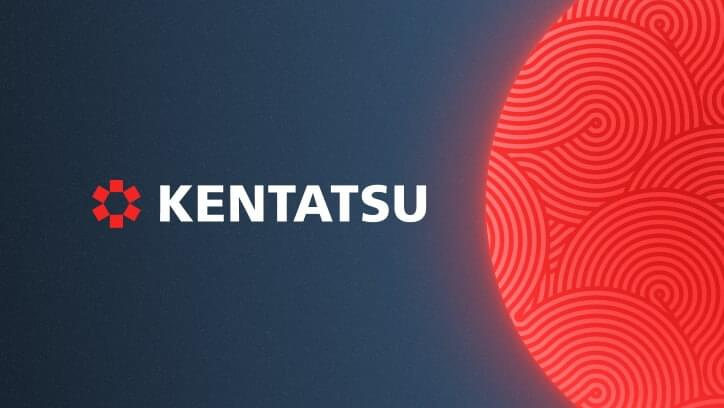Уже в первые годы своего развития компания Kentatsu Denki разработала уникальную концепцию климатического оборудования, включая интеллектуальные центральные системы с суперкомпрессором Multi Step, и произвела первые бытовые кондиционеры под брендом Kentatsu.
- 2005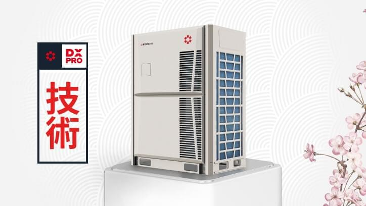
- Разработаны и запущены в производство интеллектуальные системы DX PRO.
- Оборудование бренда впервые представлено на российском рынке.
- Kentatsu принял участие в крупных отраслевых выставках «Мир Климата» и Batimat.
- 2008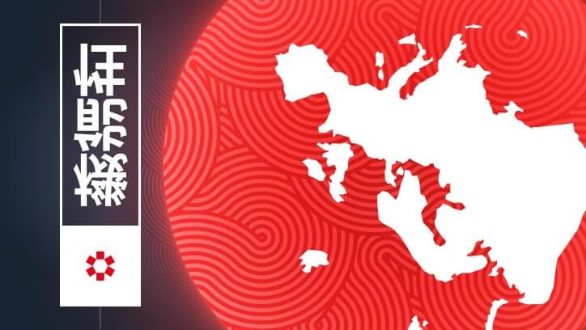Kentatsu Denki выходит на новые рынки и расширяет возможности своих партнеров. Для обеспечения ритмичных поставок в Россию и страны СНГ завершено строительство распределительного центра в Восточной Европе.
- 2010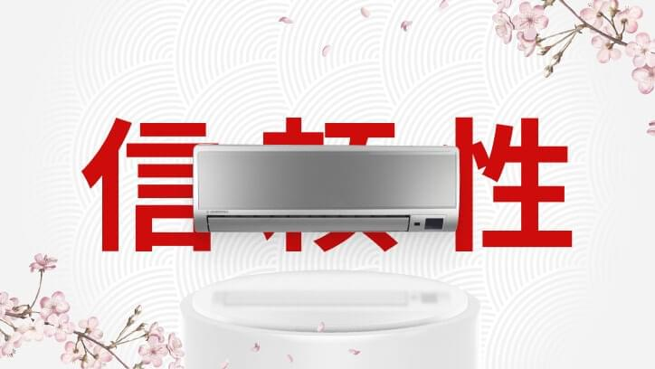
- Год ознаменован выпуском флагманской сплит-системы Kentatsu Titan Genesis.
- Линейка DX PRO набирает популярность в Восточной Европе.
- Открыто производство вентиляционных установок производительностью от 500 до 160 000 м3/ч с эффективными AC и EC-двигателями.
- 2013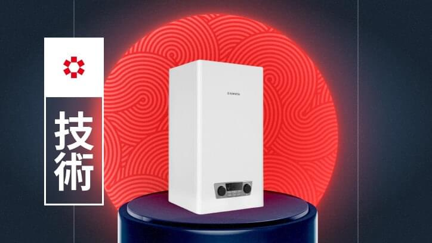Kentatsu Denki представила новое направление - современный модельный ряд отопительного оборудования: котлы различных типов, радиаторы отопления и горелки. В этот период компания также наладила поставки компонентов для систем с чиллерами.
- 2015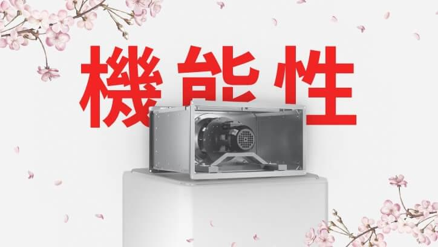В ассортименте бренда появилась линейка канального вентиляционного оборудования.
- 2017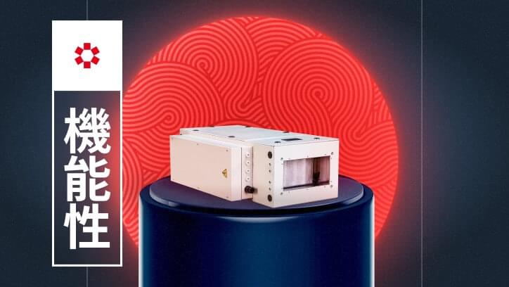
- Ассортимент компании дополнился приточными и приточно-вытяжными установками в компактном моноблочном исполнении.
- Запуск в производство новых бытовых кондиционеров на экологичном хладагенте R32.
- Kentatsu Denki выходит на рынки Беларуси и Казахстана.
- Впервые представлены модели с возможностью подключения к облачному управлению.
- 2021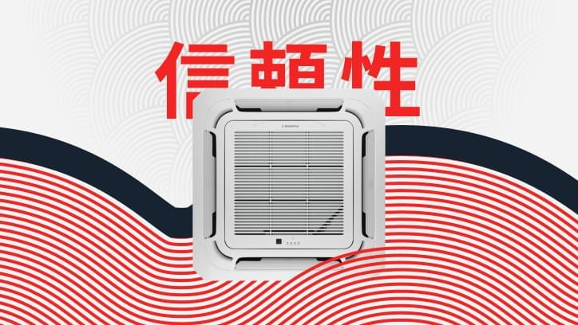
- Старт продаж новой линейки инверторных коммерческих кондиционеров серии KOMASU. Завершена разработка и налажено производство новой линейки центральных интеллектуальных систем Kentatsu DX PRO.
- Расширение дилерской сети и географии присутствия в странах СНГ: Киргизии, Узбекистане и Туркменистане.
- 2022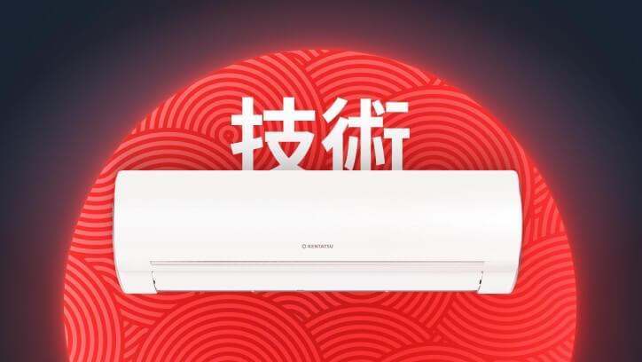
- В линейке бренда Kentatsu появился первый тепловой насос типа «воздух-воздух» - Otari с возможностью работы на обогрев до -25 ℃ за окном.
- Представлено новое поколение центральных систем серии DX PRO VI. Системы обеспечивают одну из самых высоких в отрасли энергоэффективность процесса охлаждения и обогрева за счет использования только инверторных компрессоров и вентиляторов с двигателями постоянного тока, а также теплообменника с высоким коэффициентом теплопередачи.
- Kentatsu Denki расширяет модельный ряд промышленного оборудования и вводит чиллеры. Системы Kentatsu PROMAIR идут в ногу с мировым прогрессом в области систем кондиционирования.
- В направлении теплового оборудования появились электрические котлы NOBBY ELECTRO с уникальными монолитными теплообменниками из Al-Mg сплава «сухого» исполнения.
- 2023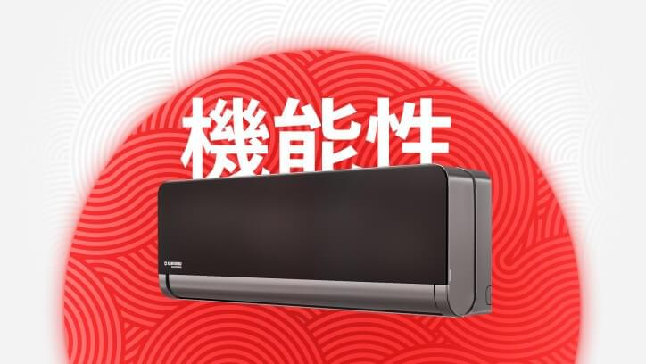
- Серия OMORI - первый дизайнерский флагманский кондиционер в изящном черном корпусе. Симбиоз выдающейся энергоэффективности, глубокой очистки воздуха и поворотным на 180° жалюзи для бескомпромиссного уровня комфорта.
- Kentatsu Denki впервые представила новый продукт – инверторные компрессорно-конденсаторные блоки. Современные энергосберегающие технологии, встроенный блок автоматики, надежные комплектующие от лидеров мировых технологий позволяют предложить грамотное техническое решение для работы приточных установок и центральных кондиционеров.
- 2024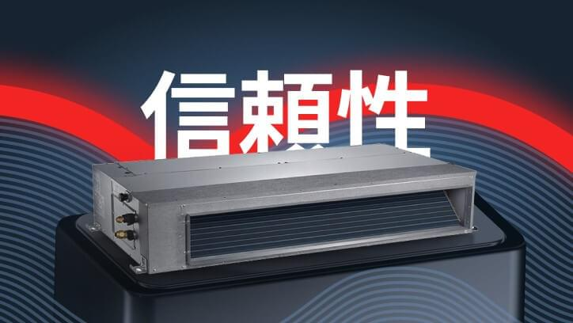
- Высоконапорные канальные блоки коммерческих кондиционеров (22кВт) перешли на инверторные технологии, благодаря чему стали более надежными и энергоэффективными.
- Представлен новый модельный ряд бюджетных VRF-систем - Kentatsu DX PRO A, что существенно расширяет возможности применения на объектах различного назначения.
- Новый продукт в портфеле бренда Kentatsu - прецизионные кондиционеры. Возможность использования низкотемпературного комплекта позволяет применять прецизионные кондиционеры в регионах с низкими температурами воздуха в зимний период.
- Запущена линейка NOBBY SMART II на смену популярного бестселлера котла NOBBY SMART. Новинка включает в себя возможность подключения автоматики по протоколу OpenTherm для удаленного управления и интеграцию котла в систему «умный дом»
- Расширение модельного ряда настенных газовых котлов за счёт линейки NOBBY BASE мощностью от 10 до рекордных 50 кВт, что является уникальным предложением на рынке. Предлагаются в различных комплектациях, в двух- и одноконтурных версиях, с открытой и закрытой камерой сгорания.
- 2025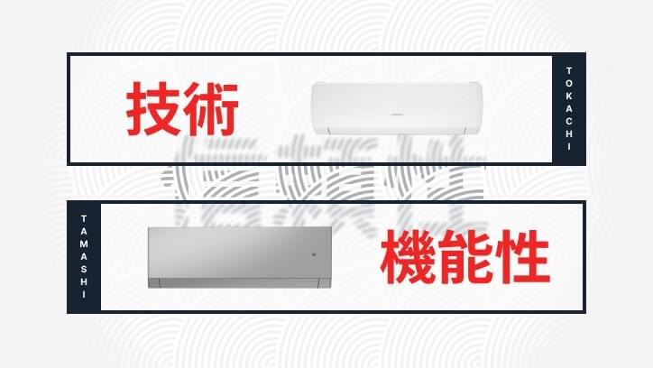
- Линейка тепловых насосов типа «воздух-воздух» расширилась и добавились сразу две новые модели - серия TOKACHI (работа до -30 °C на обогрев) и дизайнерская серия TAMASHI в сером цвете с возможностью работы до -25 °C.
- Серия коммерческих кондиционеров KOMASU полностью обновилась. Блоки перешли на экологически безопасный хладагент R32, что способствует повышенной энергоэффективности модели, требует меньшей заправки, сокращает влияние на окружающую среду. Теперь вся серия KOMASU поставляется в комплекте с проводным сенсорным пультом управления DC70W c возможностью управления по Wi-Fi и Bluetooth.
- Анонс системы DX PRO VII на 2025 год. Максимальная холодопроизводительность одного наружного блока составит 101 кВт. Будут увеличены максимальные длины и перепады высот в системе. Появится автоматическая заправка хладагентом и будет расширен диапазон рабочих температур: -15~55 °C (на охлаждение) и -30~30 °C (на обогрев). Все внутренние блоки новой серии DX PRO VII будут оснащены двигателями вентиляторов постоянного тока (DC-моторами).
Разумная достаточность в основе всего, что мы делаем
Все оборудование, которое когда-либо было и будет разработано нашей компанией, опирается на один незыблемый фундамент: принцип Разумной достаточности Kentatsu. Что это? Умение сосредоточиться на главном. Искусство предлагать решения, в наибольшей степени соответствующие реальным потребностям клиентов. Это позволяет создавать технику, которая надежна – и не старается казаться сложной. Экономична – и не пытается удивить излишним. Выверена – и сохраняет актуальность долгие годы. А главное, эффективно создает комфортную атмосферу в любом помещении.
Наши ценности
Рациональность
Каждое устройство Kentatsu на практике подтверждает, что с нашим брендом потребители не переплачивают за ненужное. А сам производитель тратит силы и ресурсы только на то, что действительно важно: на создание надежной, эффективной и доступной климатической техники.
Технологичность
Конструирование изделий - важнейший этап деятельности нашей компании, над которым работают лучшие инженеры Kentatsu Denki. Идеология продукта всегда рождается внутри Kentatsu. Только это гарантирует эффективность используемых технологий, их бесперебойную работу сейчас и в будущем.
Надежность
Сегодня «технологический цикл Kentatsu» общепризнан и используется другими компаниями при организации производственных процессов. Этот цикл включает в себя не только строгий контроль при производстве продукции, но и постоянное улучшение качества с акцентом на наиболее важные для потребителей функции.

Экологичность
Производства, работающие по принципу Разумной достаточности, действуют бережно в использовании природных ресурсов. При производстве климатического оборудования Kentatsu, применяются экологичные технологии и материалы,, потому что мы слышим голос природы и думаем о будущем.
Гибкость
Климатические системы Kentatsu адаптированы под различные особенности климата стран присутствия. На каждом рынке разумные решения – свои, поэтому мы очень тщательно подходим к формированию локальных линеек для наших климатических систем.
Открытость
Предлагая решения, созданные по принципу Разумной достаточности, компания Kentatsu остается открытой к новым технологическим достижениям и стремится оправдать доверие клиентов. Их интересы – ключевое звено любой нашей разработки.
На вершине технологических достижений
С самого начала, Kentatsu Denki разрабатывает и организует производство удобных экономичных устройств, обладающих действительно полезными функциями и соответствующих реальным потребностям частных и корпоративных клиентов.
Высокая энергоэффективность
Энергоэффективные технологии в кондиционерах Kentatsu идут в ногу со временем: экономят на эксплуатационных затратах, делают устройства безопасными для окружающей среды, соответствуют высоким требованиям действующих и будущих строительных норм по энергосбережению.
- 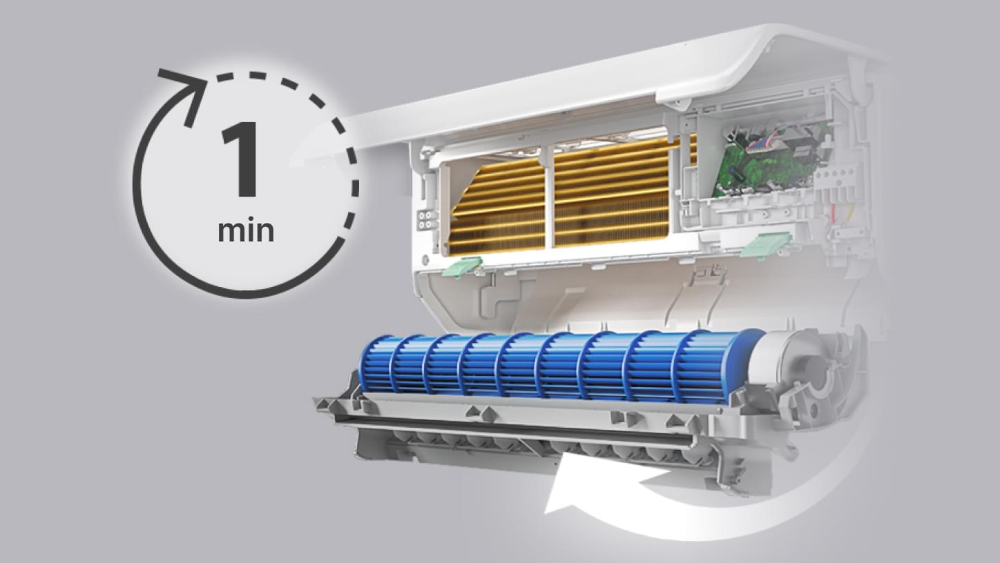
Easy Climate Pro – проще не бывает. Легкий монтаж, быстрое сервисное обслуживание
Технология Easy Сlimate Pro сделала монтаж кондиционера еще более простым, а сервисное обслуживание – удивительно лёгким и быстрым. Теперь монтаж* можно провести в условиях ограниченного пространства, а сервисное обслуживание – открутив всего один винт.
* Для внутреннего блока кондиционеров Kenatasu серии SEMPAI - 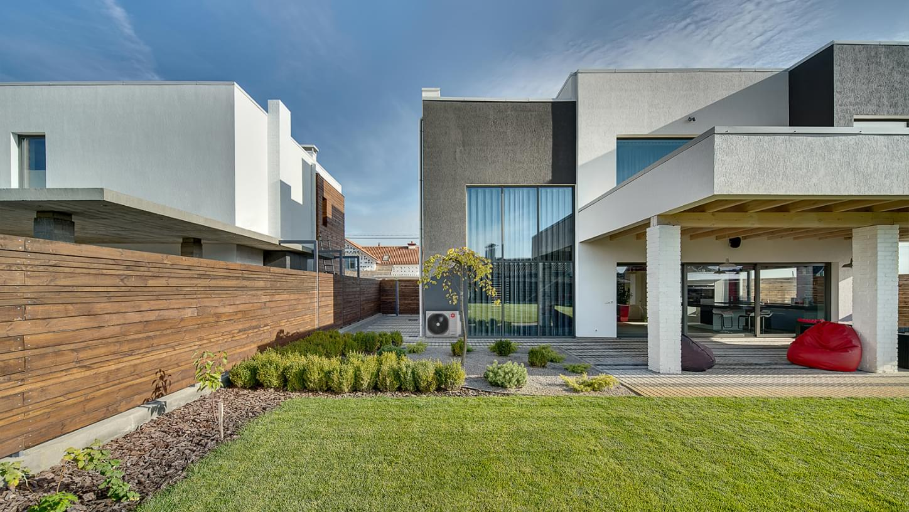
Мультисистемы – гибкость в создании комфортных условий
Применение мультисистем позволяет создать комфортный климат в нескольких помещениях с индивидуальными пользовательскими настройками, используя при этом всего один наружный и до пяти внутренних блоков.
- 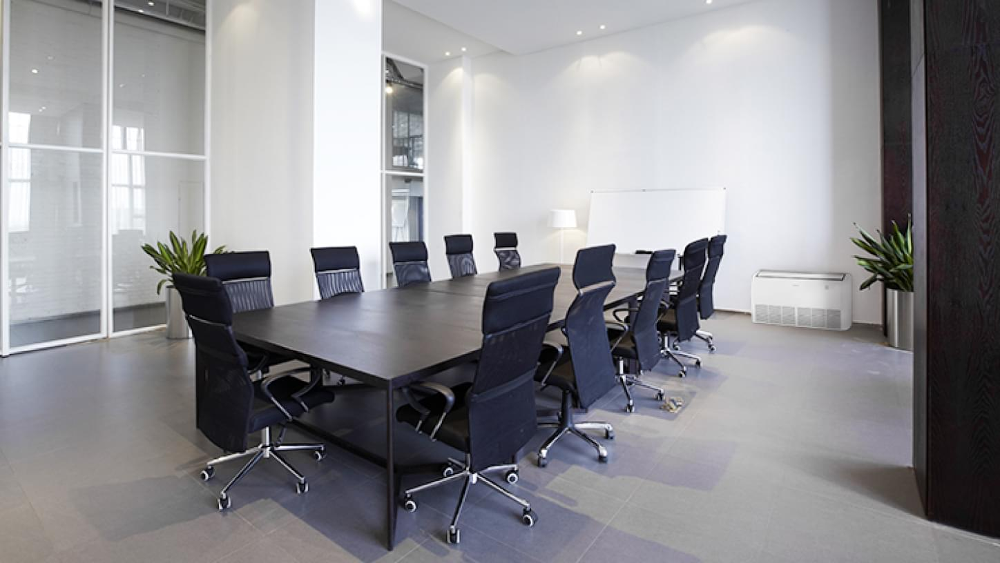
Системы полупромышленного кондиционирования
Серия Komasu inverter обладает богатым набором современных функций и спроектирована на базе самых современных технологий с низким уровнем шума и высоким классом сезонной энергоэффективности на охлаждение SEER 6.1 «A++» и нагрев SCOP 4.0 «A+».
- 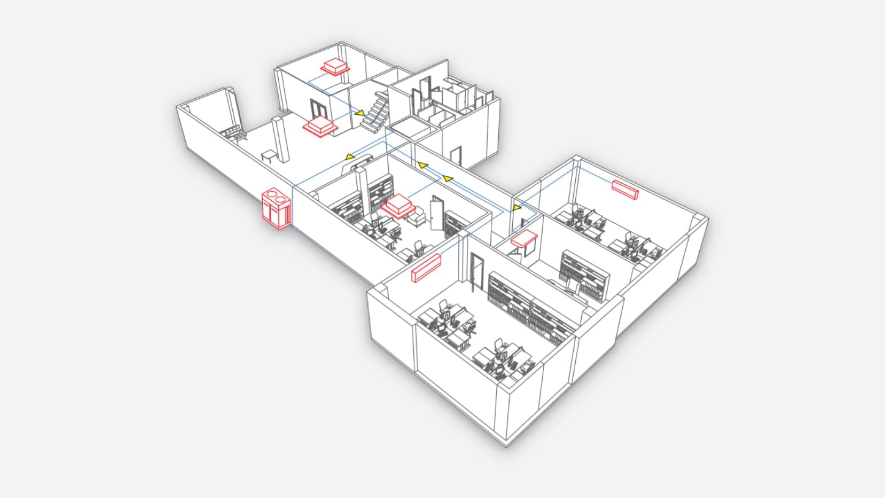
Системы VRF KENTATSU – Гибкие решения для комфорта в современном здании
Широкий модельный ряд и производительность до 96 HP, возможность подключения до 64 внутренних блоков, длинная магистраль трубопровода (до 1000 м) и перепады высот до 110 м обеспечивают возможность применения DX PRO систем практически на любом объекте.
- 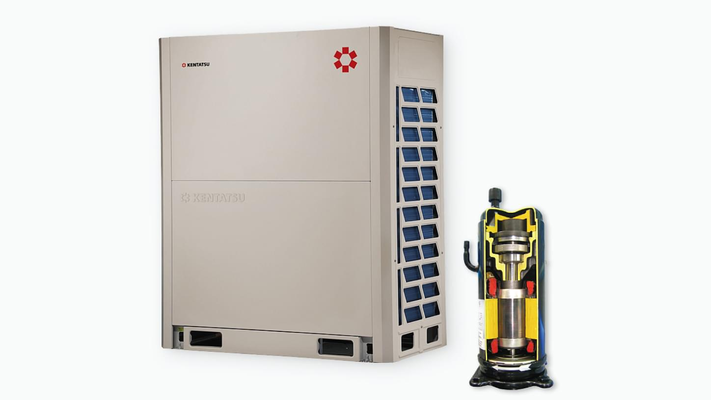
Передовые технологии VRF KENTATSU Гарантия высокой надежности
Современные системы Kentatsu DX PRO оснащены DC‑инверторными компрессорами и двигателями вентилятора, имеют широкий набор функций, гарантирующих надежную работу системы.
- 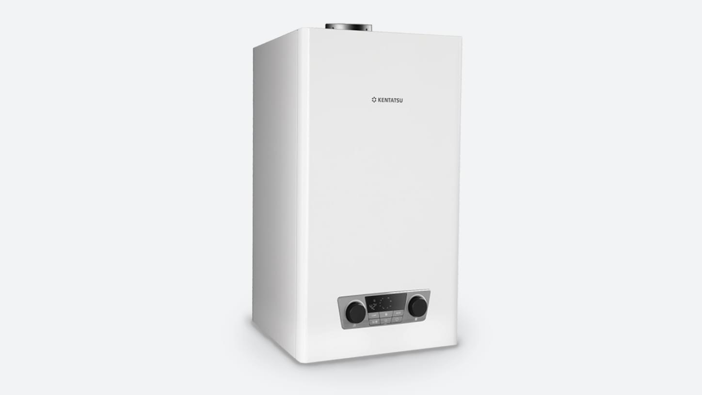
Оптимальные, высоконадежные решения для бытового отопления
Бытовые котлы, оснащенные медными теплообменниками отопления и нержавеющими теплообменниками ГВС, представляют собой идеальное решение для отопления среднего дома или квартиры.
- 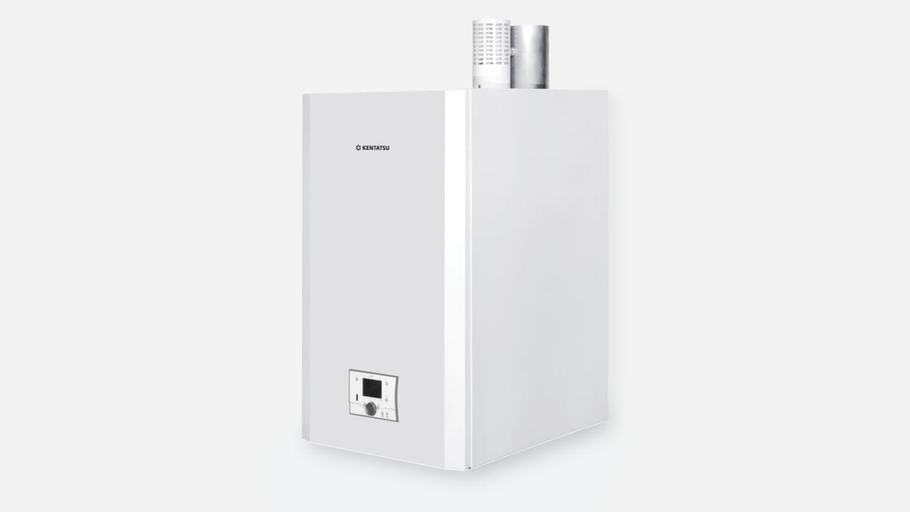
Компактные, энергоэффективные решения для коммерческого применения в отоплении
Настенные и напольные конденсационные котлы с алюминиевым теплообменником являются прекрасным выбором для организации отопления больших частных и многоквартирных домов, коммерческих зданий и объектов.
- 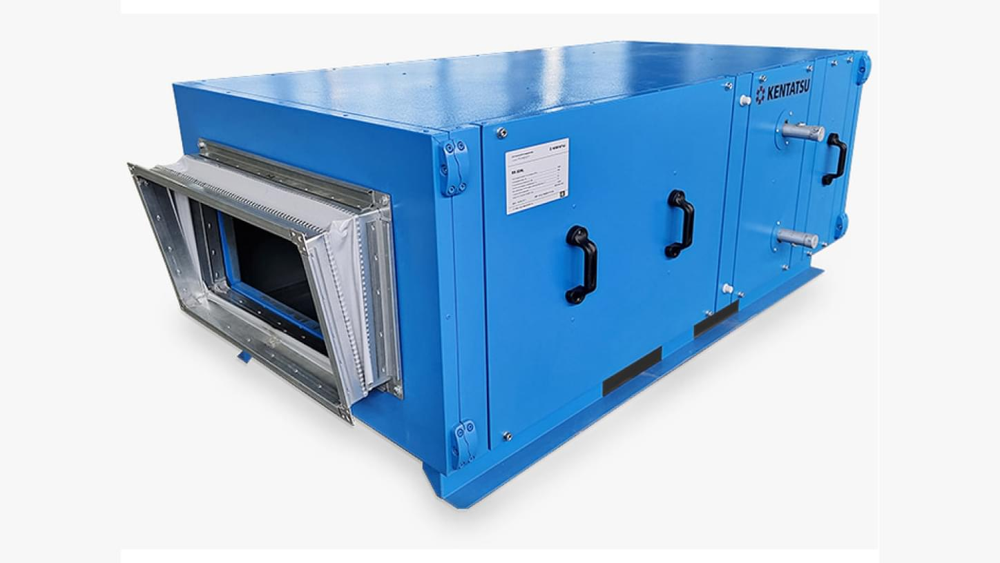
Бескаркасное исполнение корпуса центральных кондиционеров
За счёт бескаркасного исполнения корпуса повышается прочность, долговечность, улучшаются шумовые характеристики, сокращается возможность утечек в корпусе на 75%, увеличивается энергоэффективность.
- 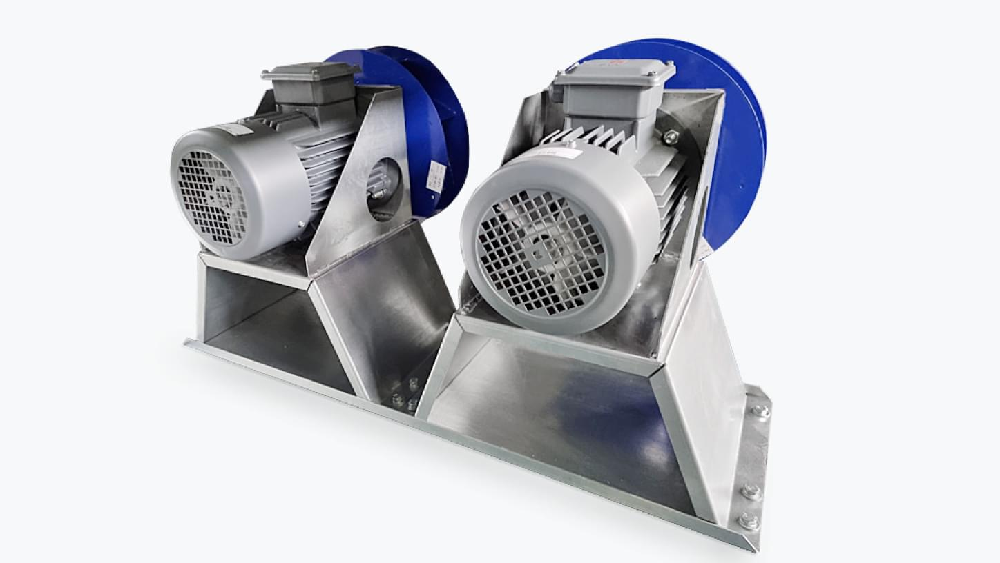
Высокоэффективные решения на базе AC‑ EC‑двигателей IE3‑IE5
Сегодня главным товарным преимуществом является энергоэффективность системы. Без использования в составе агрегата высокоэффективных решений на базе AC‑ EC‑двигателей IE3‑IE5 невозможно этого добиться.